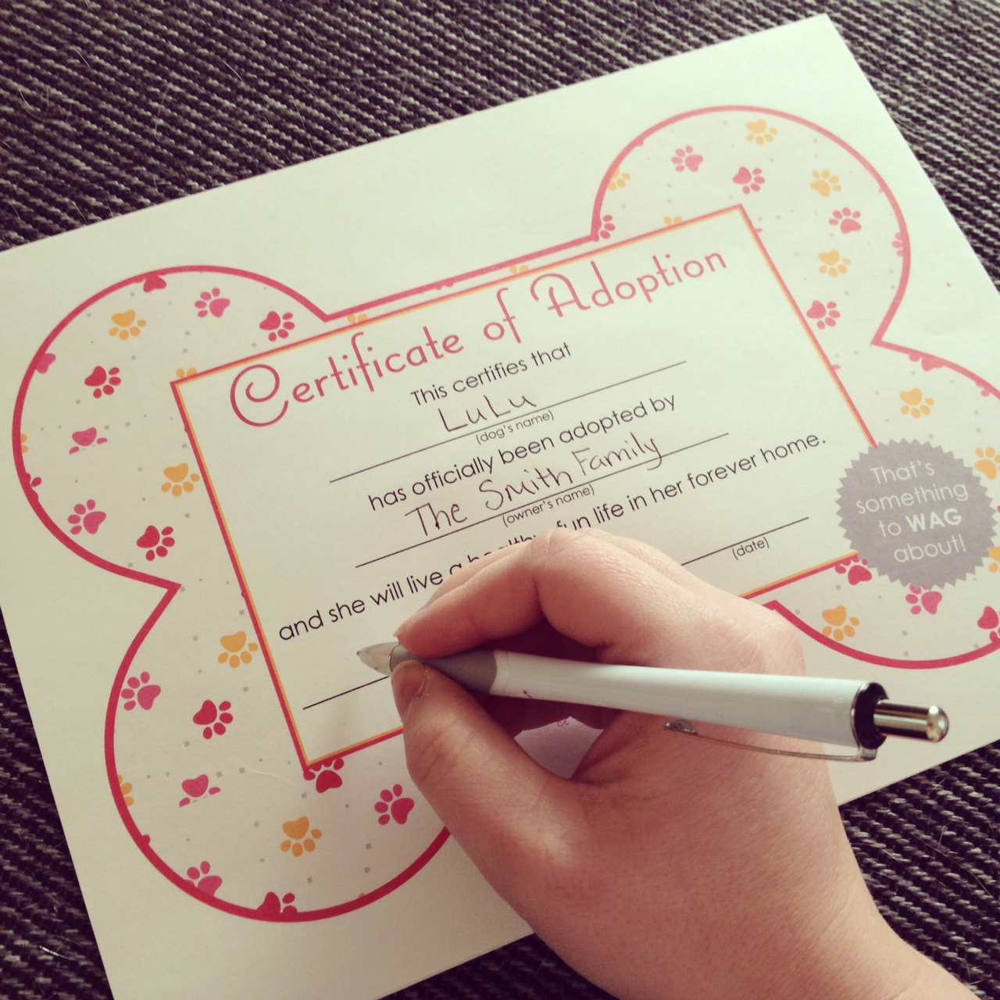
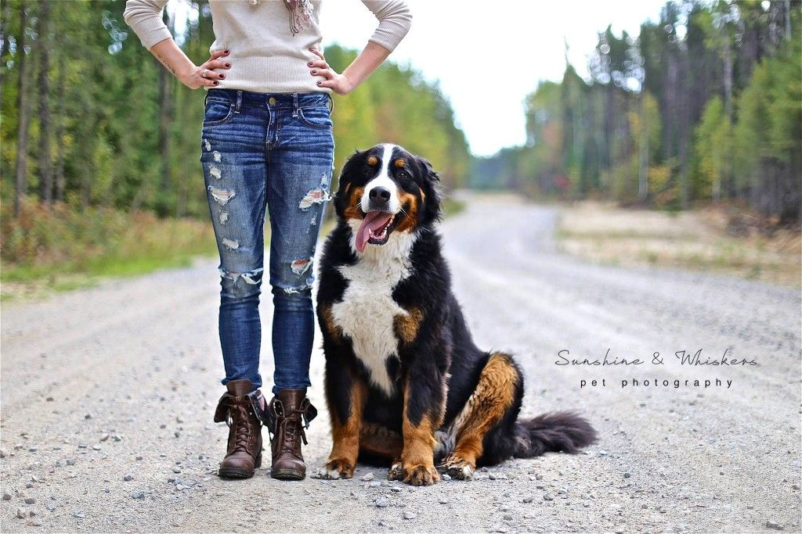
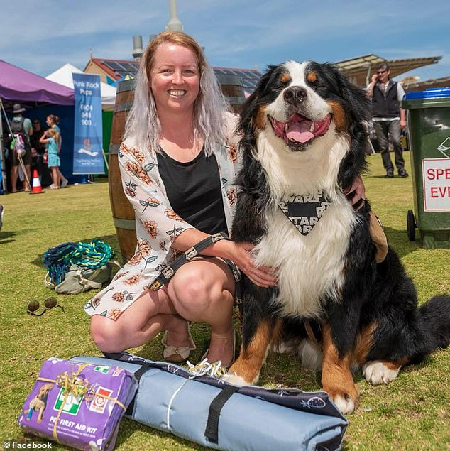

There are many great reasons to adopt a puppy. Adopting animals is a great way to save a life. You can save a lot more money adopting becasue Bernese mountain dogs go for $800-$2000. Agood website to adopt an animal is adoptapet.com . Another good website is BFW rescue inc.. There are also many shelters to go and adopt an animal.
.   